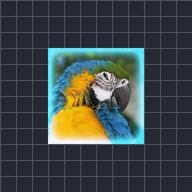

ইনার গ্লো

লেয়ারের অস্বচ্ছ অংশের ভেতরের প্রান্ত বরাবর গ্লো যোগ করে।
সেটিংস
| সেটিং | ধরন | রেঞ্জ | ডিফল্ট |
|---|---|---|---|
| সাইজ | সংখ্যা | 0 থেকে 300 | 30 |
| ইনটেনসিটি | সংখ্যা | 0 থেকে 4 | 1 |
| কালার | কালার | – | #FFFFFF |

লেয়ারের অস্বচ্ছ অংশের ভেতরের প্রান্ত বরাবর গ্লো যোগ করে।
| সেটিং | ধরন | রেঞ্জ | ডিফল্ট |
|---|---|---|---|
| সাইজ | সংখ্যা | 0 থেকে 300 | 30 |
| ইনটেনসিটি | সংখ্যা | 0 থেকে 4 | 1 |
| কালার | কালার | – | #FFFFFF |